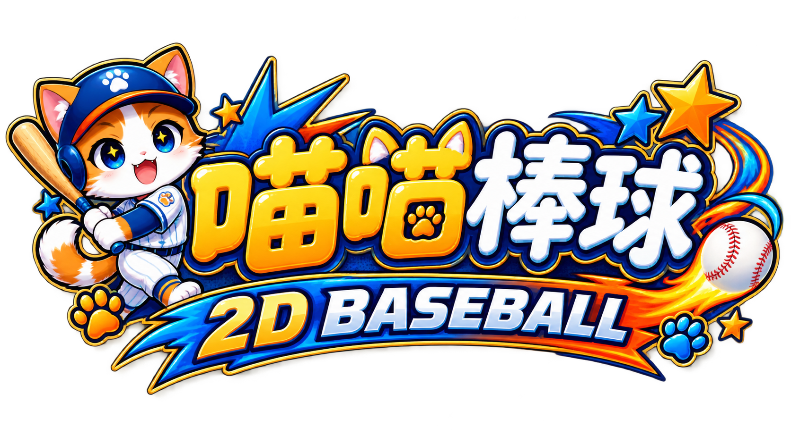
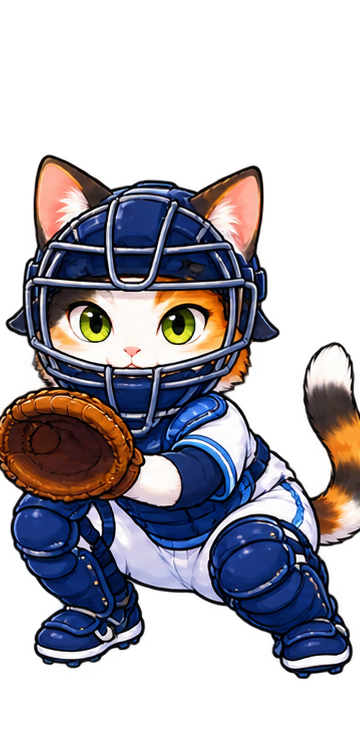
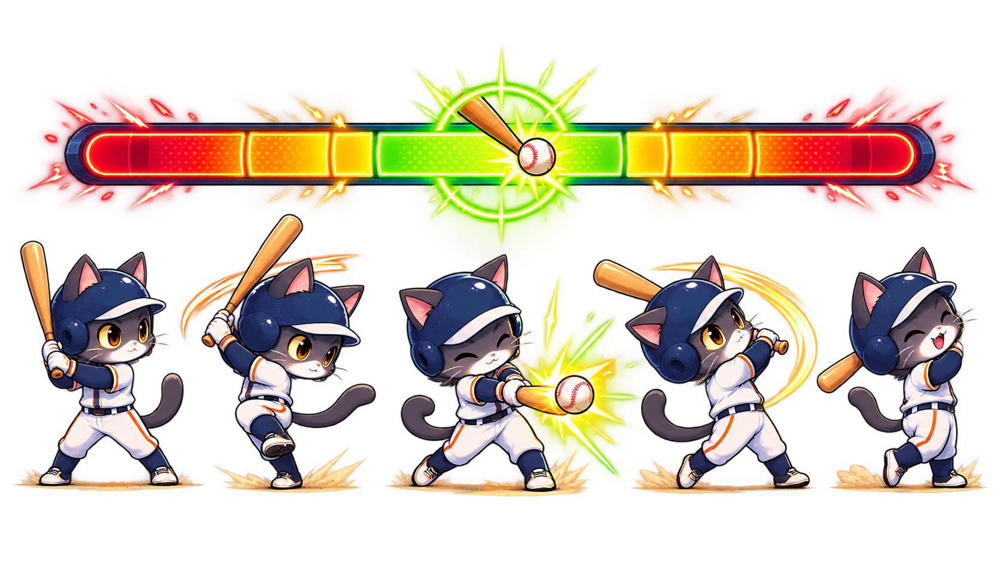
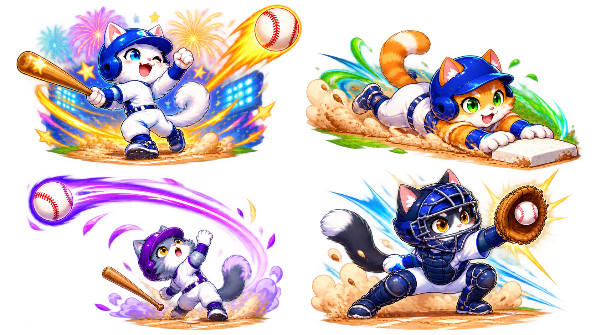
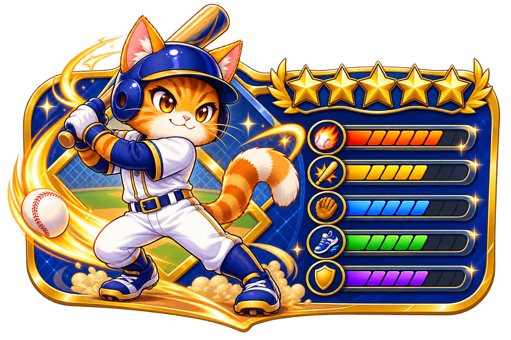

球路系統
快速球、曲球、滑球與變速球各有不同節奏，先猜球再調整瞄準。

PLAYABLE PROTOTYPE · 3 INNINGS
讀球路、抓節奏、揮出漂亮的安打。這是一個把「投球 → 揮棒 → 結果」做成手感的 2D 棒球小型原型。

FROM IDEA TO PLAYABLE LOOP
這份原型把需求拆成可驗證的三層：一球一球玩、回合回合算、最後再擴充養成。
快速球、曲球、滑球與變速球各有不同節奏，先猜球再調整瞄準。

在 Timing Window 抓到綠色甜蜜點，Perfect 會帶來更高的長打機率。

從一壘安打到全壘打，跑者推進、界外球與守備接殺都會改變回合。

先用 3 局原型建立手感，再接上球員能力、技能與聯賽挑戰。
小提示：不揮棒也會判定好壞球。三個好球出局，四個壞球保送。